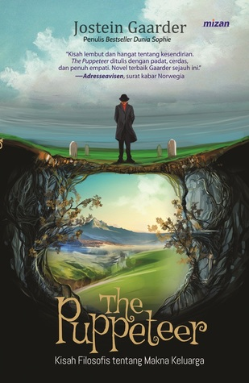

Jakop is a lonely man. He visits funerals of people he has never met, just to feel the company of other people. He is also a great storyteller. In the receptions after the funerals he invents stories about his relationship to the diseased, and the people he meets listen to him with great attention. Jakop’s great passion is language, and especially the intricate family bonds between the Indo-European languages. Here he seeks and finds a deep connection and feeling of belonging to other cultures and other times. He shares his interest for the Indo-European language family with Pelle, his only friend. Not until halfway through the novel do we learn that Pelle is, in fact, a hand puppet. The Puppeteer is a moving and thought-provoking novel about loneliness, about relations, about how language and storytelling creates connections and meaning, and about seeking a place and a purpose in the world. Readers familiar with Gaarder’s previous books will recognize the narrative energy and surplus displayed in The Ringmaster’s Daughter. ”A tender and warm novel about loneliness. The Puppeteer is a tight and intelligently composed novel, conveyed with empathy. It is one of the better Jostein Gaarder has written.”
種類 : 小説
名前 : The Puppeteer
Writer : Joestein Gaarder
Jakop is a lonely man. He visits funerals of people he has never met, just to feel the company of other people. He is also a great storyteller. In the receptions after the funerals he invents stories about his relationship to the diseased, and the people he meets listen to him with great attention. Jakop’s great passion is language, and especially the intricate family bonds between the Indo-European languages. Here he seeks and finds a deep connection and feeling of belonging to other cultures and other times. He shares his interest for the Indo-European language family with Pelle, his only friend. Not until halfway through the novel do we learn that Pelle is, in fact, a hand puppet. The Puppeteer is a moving and thought-provoking novel about loneliness, about relations, about how language and storytelling creates connections and meaning, and about seeking a place and a purpose in the world. Readers familiar with Gaarder’s previous books will recognize the narrative energy and surplus displayed in The Ringmaster’s Daughter. ”A tender and warm novel about loneliness. The Puppeteer is a tight and intelligently composed novel, conveyed with empathy. It is one of the better Jostein Gaarder has written.”

種類 : 小説
名前 : Sophie's World
Writer : Joestein Gaarder
A page-turning novel that is also an exploration of the great philosophical concepts of Western thought, Sophie's World has fired the imagination of readers all over the world, with more than twenty million copies in print. One day fourteen-year-old Sophie Amundsen comes home from school to find in her mailbox two notes, with one question on each: Who are you? and Where does the world come from? From that irresistible beginning, Sophie becomes obsessed with questions that take her far beyond what she knows of her Norwegian village. Through those letters, she enrolls in a kind of correspondence course, covering Socrates to Sartre, with a mysterious philosopher, while receiving letters addressed to another girl. Who is Hilde? And why does her mail keep turning up? To unravel this riddle, Sophie must use the philosophy she is learning--but the truth turns out to be far more complicated than she could have imagined.